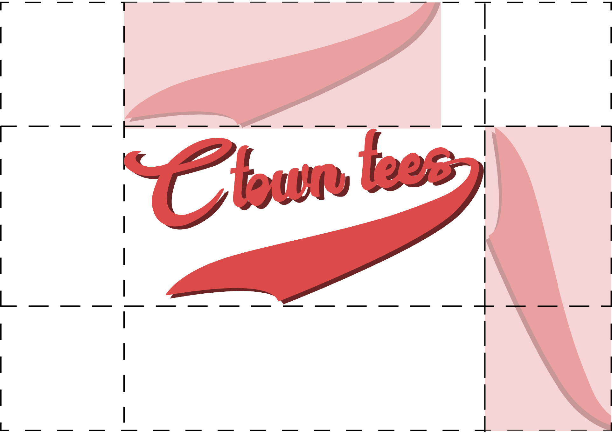
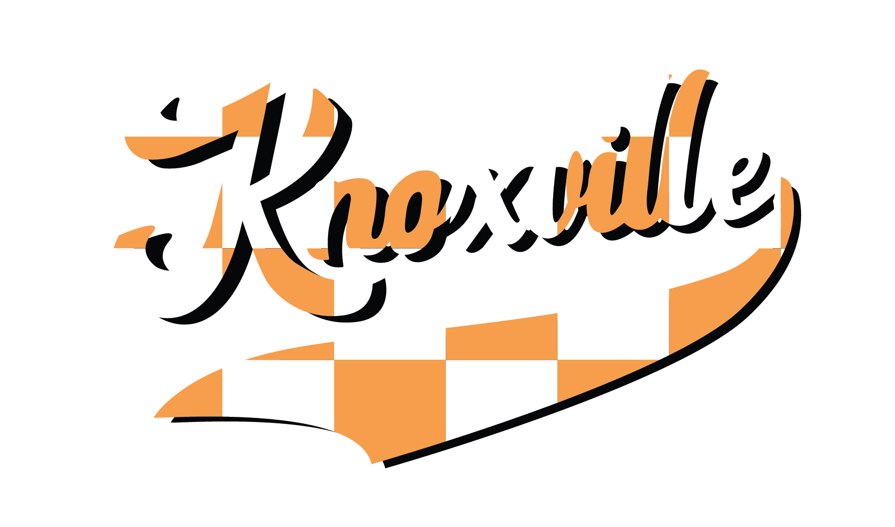
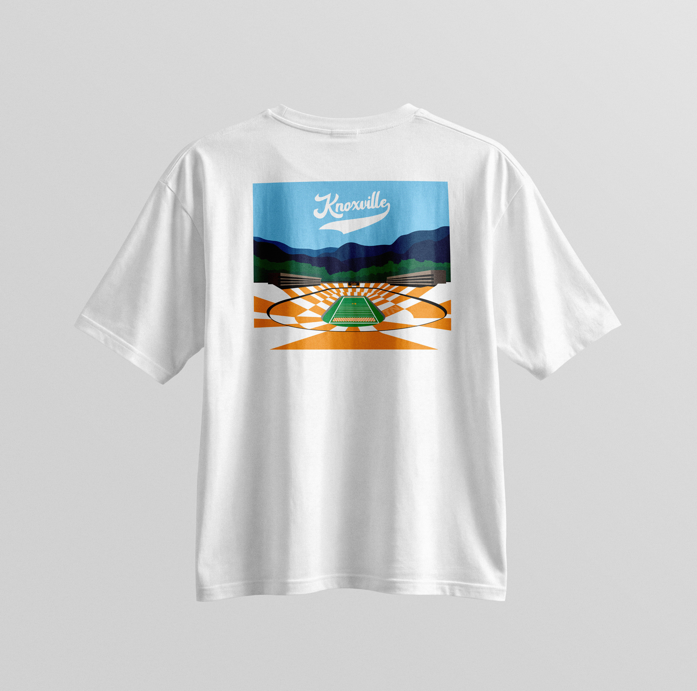
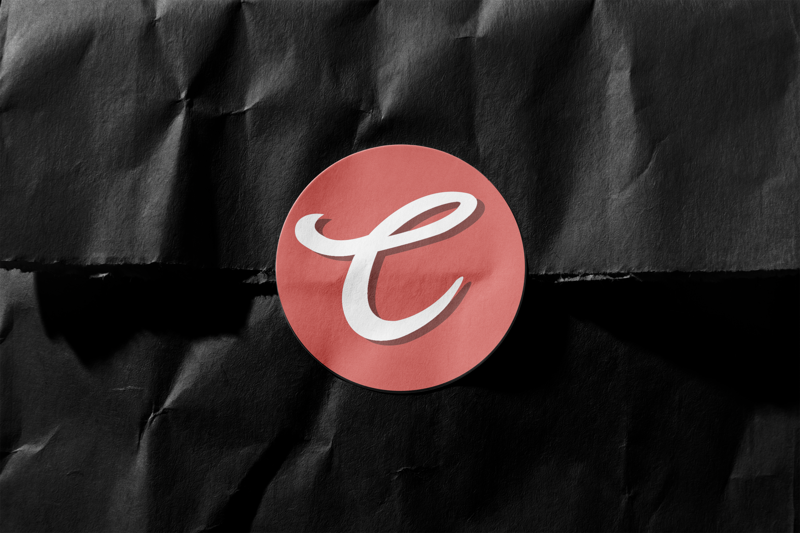
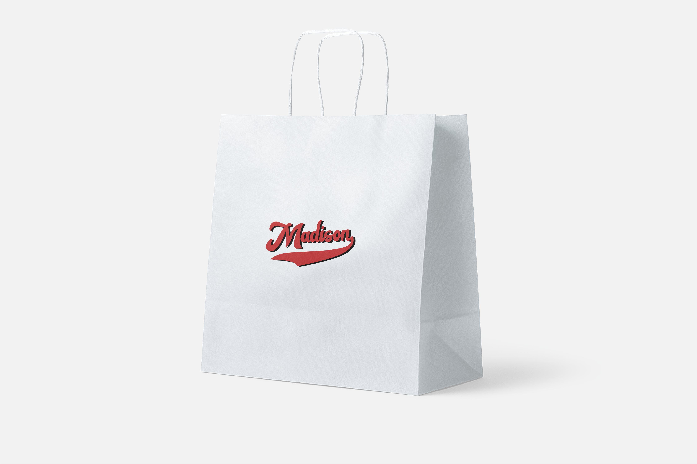
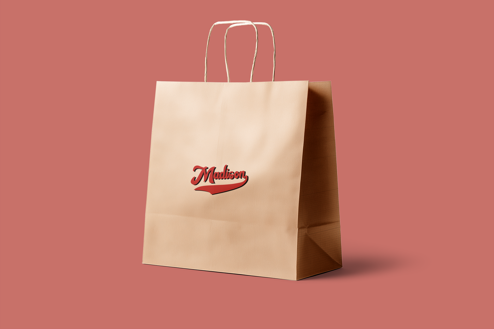

Brand Standards Guide
Wearable souvenirs.
One city at a time.
Ctown tees is a collegiate apparel brand built around one simple idea: every college town has a story worth wearing. Each collection captures the identity of a single city — its colors, traditions, and the landmarks that make it home — translated into garments that read as keepsakes, not merchandise.
The Ctown tees wordmark is a custom brush script with a classic athletic tail. It carries the warmth of hand-lettered varsity while staying modern and approachable. The tail is part of the mark and must never be separated, rotated, or cropped.
Logo Variations
The logo lives in brand red or reversed to white. It never adopts the colors of an individual school — those are reserved for the city-specific wordmarks.
Spacing
Maintain clear space around the logo equal to the height of the tail on all sides. The tail falls within this boundary — the logo should never feel crowded or compressed.

The standalone "C" lettermark is pulled from the primary script and serves as the compact mark — Instagram icons, favicons, woven labels, and stamp-sized applications. Use the circle-red version as the default; reverse to white on dark backgrounds.


The Ctown tees palette is built around nostalgia. Faded coral red, soft vintage cream, and muted black create a worn-in feel — old varsity letters, faded pennants, colors that look like they've been around for decades.
The type system pairs three distinct voices. Fraunces Black sets the editorial tone for display headlines, Rockwell Regular handles subheads and captions, and a clean sans carries body copy.
Born on the Isthmus, worn on the lake.
Fall '26 drop — limited to 300 pieces per campus.
Every Ctown tee starts with the same question: what would the people who actually live here be proud to wear? The Madison collection answers that in cow print, cream, and cardinal red — every thread a nod to the city that made it.
Each college town gets its own wordmark in the brand's script style. Built on the same brush-script base as Ctown tees but customized with hand-drawn first letters, unique tails, and the school's official colors. The city wordmarks are the face of each collection — embroidered on the front of every garment.


Madison


The cow-print variant connects Madison to Wisconsin's dairy roots — campus surrounded by farmland, the state's agricultural heritage worn on the chest.
Knoxville

The checkerboard variant draws from one of the most iconic traditions in college football — the pattern that fills Neyland Stadium on game day.
Each city's back graphic is a hand-illustrated stadium or campus landmark rendered in bold, flat color with dynamic perspective. Illustrations use the school's official palette and work in signature patterns — stripes, checkers — as environmental elements that fill the composition with energy.


Mockups
The full product experience — embroidered city wordmarks on the front, stadium illustrations across the back, and retail packaging that carries the mark from shelf to sidewalk.




